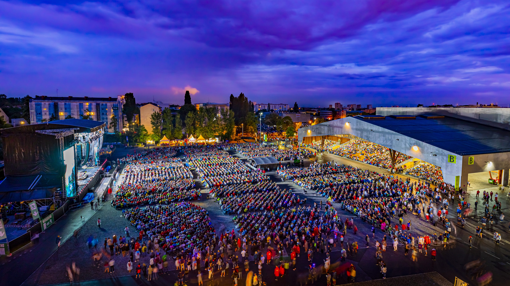
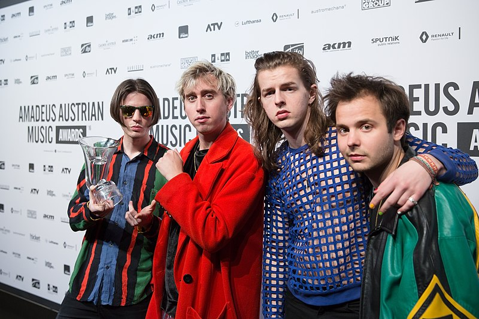
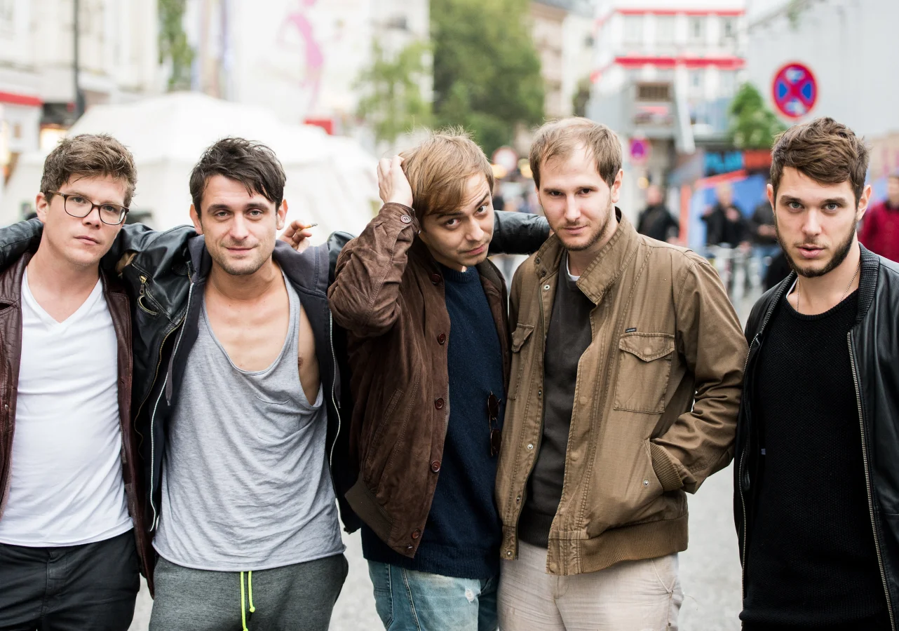
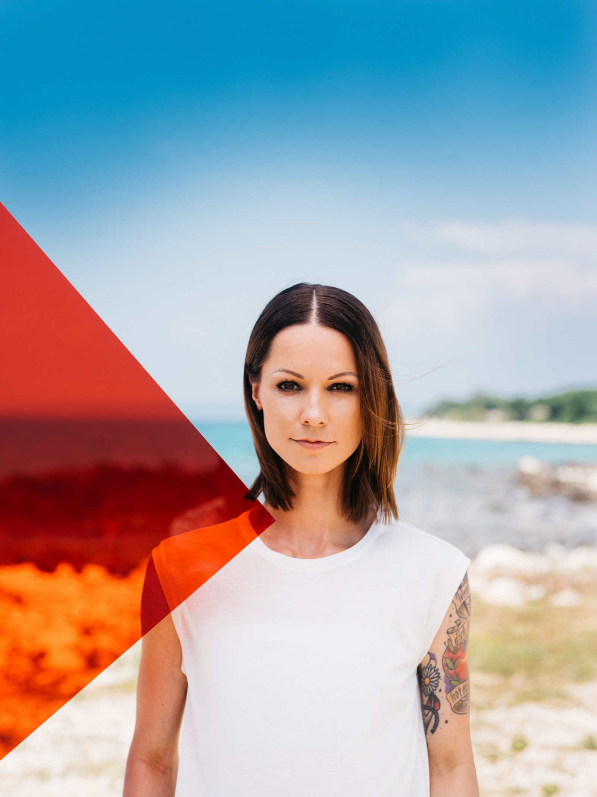
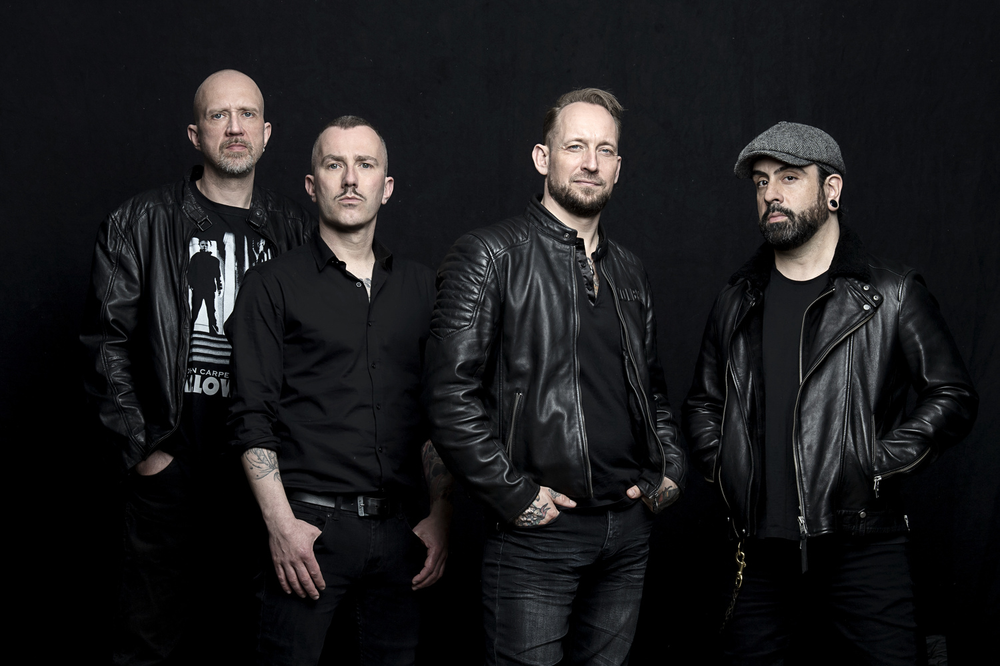
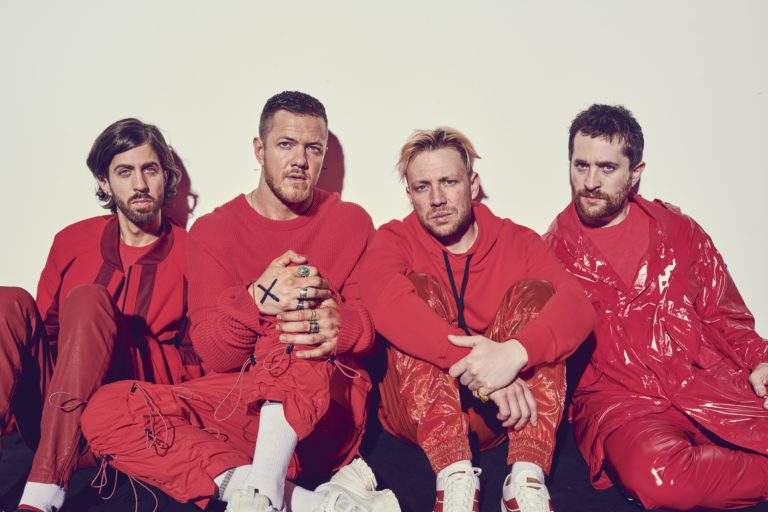
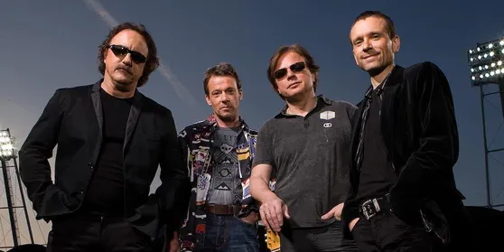
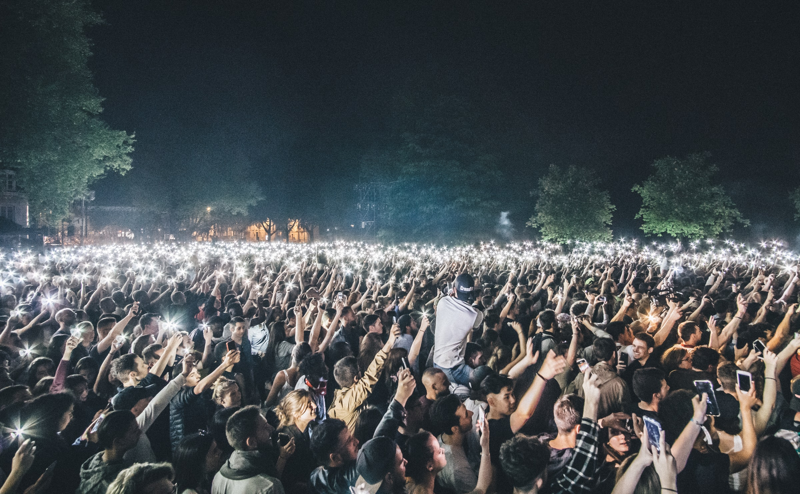

Stars in Graz
Messe Congress Graz
Шесть групп, один вечер, с 17:00 до 22:00. Расписание, артисты и ответы на вопросы ниже.
Прокрутите вниз: расписание и артисты

- Bilderbuch
- Wanda
- Christina Stürmer
- Volbeat
- Imagine Dragons
- Opus
Расписание вечера
Выберите время и посмотрите, кто выходит на сцену: шесть часов, шесть выступлений.
Шесть групп на одной сцене
-

Bilderbuch
На сцене в 17:00
Bilderbuch — одна из самых успешных австрийских рок-групп, известная своей арт-поп-музыкой.
Группа выпустила 6 альбомов. Два последних сингла вышли в этом году и ждут своего исполнения перед вами!
-

Wanda
На сцене в 18:00
Wanda — австрийская инди-поп-группа, основанная в Вене в 2012 году.
Их стиль находится под влиянием рок-н-ролла, а также австропопа. Свою музыку они называют «поп-музыкой с “Amore”».
-

Christina Stürmer
На сцене в 19:00
Christina Stürmer — австрийская певица и автор песен.
С выпуском международного дебютного альбома Schwarz Weiss она стала одним из самых продаваемых австрийских исполнителей, появившихся в немецкоязычной Европе в середине 2000-х годов. За 15 лет карьеры Стюрмер продала более 2 миллионов пластинок.
-

Volbeat
На сцене в 20:00
Volbeat — датская рок-группа, образованная в Копенгагене в 2001 году. Они играют смесь рок-н-ролла, хэви-метала и рокабилли.
Второй альбом Rock the Rebel / Metal the Devil получил платиновый статус, а релиз 2010 года Beyond Hell / Above Heaven — широкое признание критиков: двойную платину в Дании, платину в Финляндии и Германии, золото в США, Швеции и Австрии.
-

Imagine Dragons
На сцене в 21:00
Imagine Dragons — американская поп-рок-группа из Лас-Вегаса, штат Невада.
Они продали 77,5 миллионов сертифицированных синглов в США и 20 миллионов альбомов по всему миру. Это самая популярная группа 2018 года на Spotify и первая рок-группа, у которой четыре песни — «Radioactive», «Demons», «Believer» и «Thunder» — набрали более миллиарда прослушиваний.
-

Opus
На сцене в 22:00
Opus — поп-рок-группа из Граца, Австрия. Известна в основном синглом 1985 года «Live Is Life», который вошёл в десятку лучших в нескольких европейских странах.
В августе 2020 года группа объявила о распаде 21 декабря 2021 года. В этот день состоится последний концерт в Оперном театре Граца.
Messe Congress Graz
Messe Congress Graz — самый большой многофункциональный зал для мероприятий в Граце. Ещё до того, как здесь прошли «Звезды в Граце», на этой площадке выступали многие международные группы и музыканты.
Станьте его частью и окунитесь в уникальную атмосферу в этот особенный вечер.

Билеты на 30.11.2021
Золотой круг у самой сцены, места для инвалидных колясок и оплата картой во всех киосках с едой.
Купить билеты- Первое выступление
- 17:00
- Площадка
- Messe Congress Graz
- Без взрослых
- с 16 лет
Гости о прошлом годе
Отличная музыка, отличная публика, отличная атмосфера! Вернусь в следующем году!

Ещё раз спасибо за ещё одну замечательную звезду в Граце! С каждым годом всё лучше. Это лучший музыкальный фестиваль в мире, и я рада, что являюсь его частью.
«Звезды в Граце» были просто потрясающими. Радость со сцены была заразительной. За все годы, что я заказывал концерты, ни один не вызвал более восторженного отклика. Это было не в чартах!
На вчерашнем концерте время остановилось… Большое спасибо! Мы отлично провели время!
Ух ты! Такой восхитительный весёлый вечер в прошлую субботу. Группы были великолепны, а программа прекрасна! Мы с нетерпением ждём следующего.
Это отличный музыкальный концерт с действительно хорошей публикой! Блестящая атмосфера и много счастливых лиц, молодцы на отличном мероприятии!
Не могу переоценить, насколько весело было на «Звёздах в Граце». Друзья, отличная музыка, декорации, ночная вечеринка. Ух ты! Так рад быть там!
Частые вопросы
Что такое «Звезды в Граце»?
«Звезды в Граце» — это однодневный музыкальный концерт, на котором разные артисты исполняют свои самые популярные песни. Проходит раз в год с 2015 года.
Когда состоится «Звезды в Граце»?
30.11.2021. Первое выступление начинается в 17:00.
Какой минимальный возраст?
Лица младше 16 лет без сопровождения взрослых не допускаются.
Могу я заплатить кредитной картой?
Да, кредитными картами можно пользоваться во всех киосках с едой.
Что такое Золотой круг?
В Золотом круге вы как можно ближе переживаете любимое выступление. Он расположен прямо перед сценой. Покажите билет Golden Circle, и вы попадёте в эту зону быстро и легко благодаря отдельному входу.
Есть ли места для инвалидных колясок?
Конечно, есть. Однако места ограничены. Пожалуйста, свяжитесь с нами заранее для получения дополнительной информации.
Могу ли я перепродать свой билет, если не могу поехать?
Перепродажа билетов запрещена. По соображениям безопасности мы также настоятельно не рекомендуем покупать билеты у кого-либо. Любой, кто попытается пройти на мероприятие с копией или подделкой билета, будет заподозрен в неправомерном использовании билетов и привлечён к ответственности.